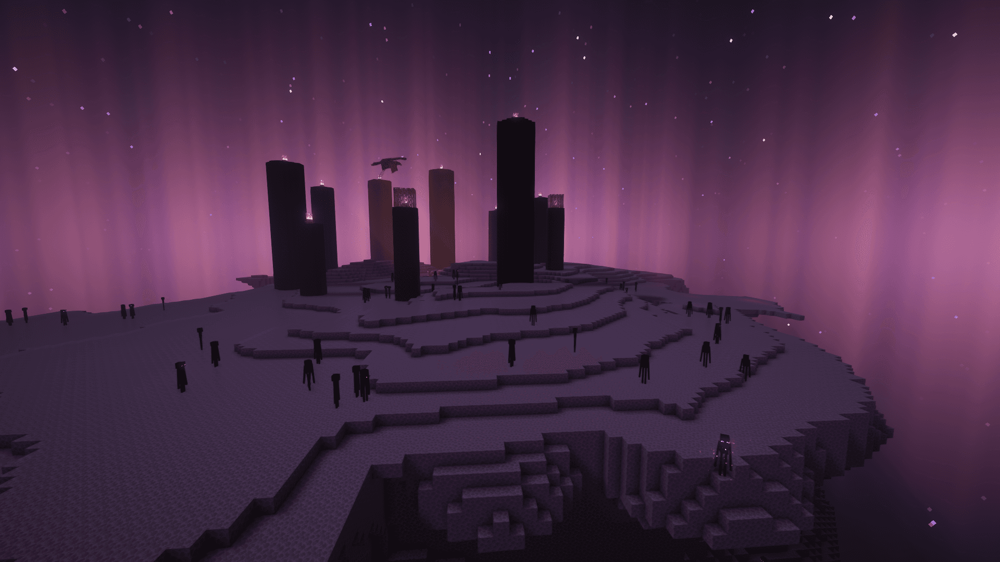
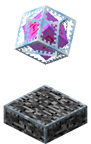
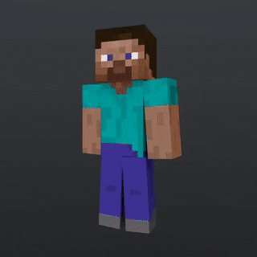

Крок 1: Нарешті моя любима частина босс файт😁 Ми на обсидіановій платформі я думаю це ти вже помітив сподіваюся в тебе кілька блоків!
Крок 2: Ми на острові швидше збиваєм кристали за допомогою лука який ми зробили раніше а якщо не получается забирайся на стовп та збивай кристалл рукою але обережно постав перед собою блок перед тим як будешь збивати
Крок 3: Кристали вже збиті стріляй у дракона стрілами а коли закінчатся чекай поки спустится та бий по хвосту!

Це кінець ти пройшов я вільний ура!
